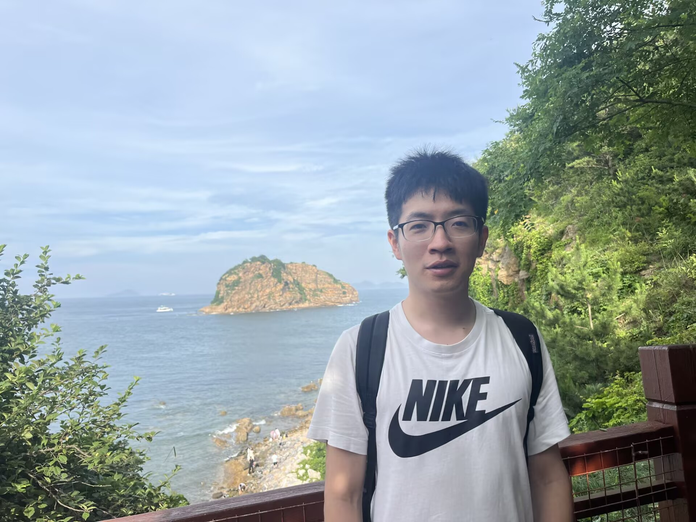

Qiutong Wang （王求同）
I am a Ph.D. student in mathematics at Zhejiang University, advised by Prof. Binyong Sun. I am currently visiting the Department of Mathematics at Yale University as a Visiting Assistant in Research (September 2026–August 2027), hosted by Prof. Ivan Losev.
My research interests are algebraic aspects of the representation theory of real reductive groups and the geometry of nilpotent orbits.
Email: wang.qt@zju.edu.cn · qiutong.wang@yale.edu
Here is my CV.